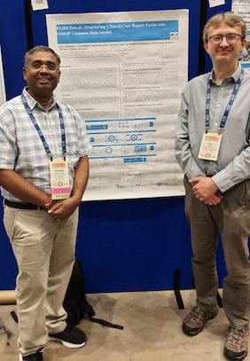
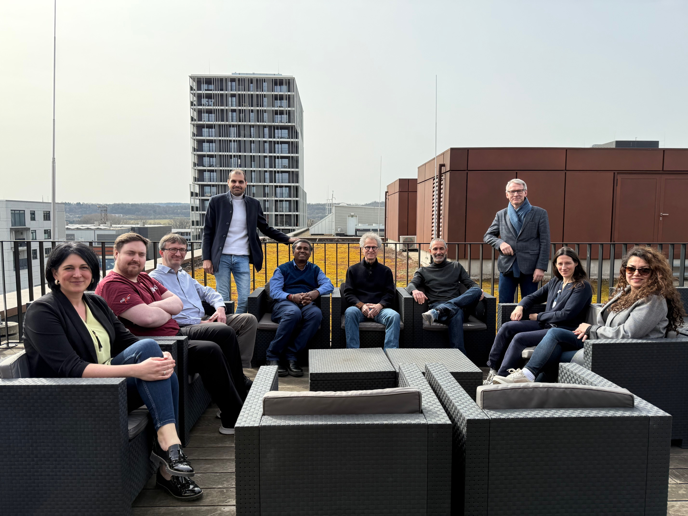
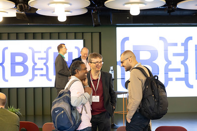
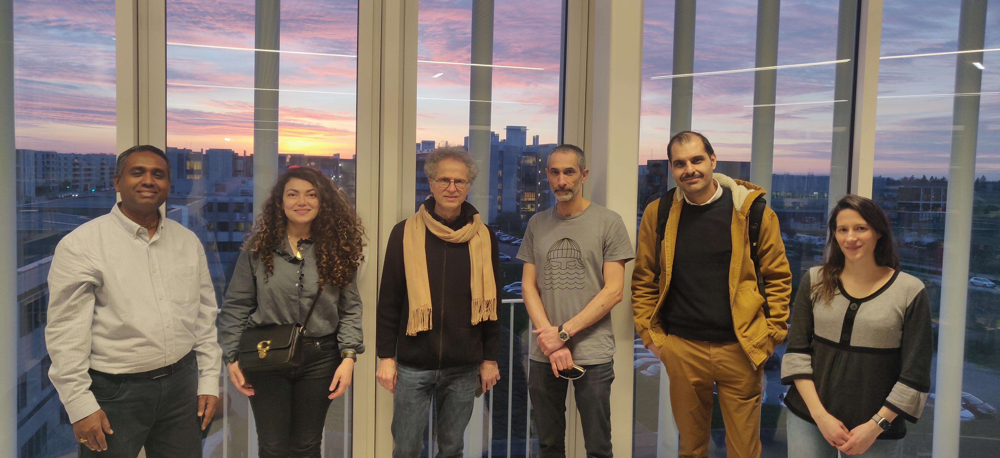

-
ISMB/ECCB 2025
Venkata Satagopam, Tim Beck and Thomas Rowlands attended the ISMB/ECCB 2025 conference in Liverpool, England. They presented a FAIRClinical poster, designed by Basel Alshaikhdeeb, describing the work underway to structure clinical case report forms into the OMOP common data model.
July 2025
-
ELIXIR All Hands Meeting
Tim Beck, Venkata Satagopam and Patrick Ruch attended the ELIXIR All Hands Meeting in Thessaloníki, Greece. They presented a FAIRClinical poster describing the work underway to make published clincial case reports and supplmentary data FAIR. The poster is available from F1000Research.

June 2025
-
CHIST-ERA Projects Seminar 2025
Basel Alshaikhdeeb represented FAIRClinical at the CHIST-ERA Projects Seminar in Istanbul, Türkiye. Basel engaged with researchers and representatives of the research funding organisations to explain the benefits FAIRClinical is bringing for open and FAIR data.

April 2025
-
FAIRClinical 1st Annual Meeting
The FAIRClinical consortium met at the University of Luxembourg for the project’s 1st Annual Meeting. Across the two-day meeting, consortium members had the opportunity to reconnect since meeting in Paris twelve months earlier, reflect on progress made over the past year, and engage in discussions about the future direction of the project.
March 2025
-
BioHackathon Europe
Tim Beck, Venkata Satagopam, Basel Alshaikhdeeb and Thomas Rowlands attended BioHackathon Europe in Barcelona, Spain. They led a project aligned to the objectives of FAIRClinical called Structuring Clinical Reports into OMOP Common Data Model. Great progress was made after four days of intensive hacking (cut short by one day due to a severe storm!) that will accelerate the FAIRClinical project’s technical developments.
Credit: Elixir Europe
November 2024
-
ELIXIR All Hands Meeting
Venkata Satagopam presented the FAIRClinical project at the ELIXIR All Hands Meeting in Uppsala, Sweden. Venkata explained to a text mining audience how the outcomes from the project will support the life sciences research data community.
June 2024
-
FAIRClinical Kick Off Meeting
The FAIRClinical consortium met for the project’s kick off meeting at the Université Paris-Saclay, France. The two days were filled with presentations, discussions and much cross-team collaboration.
March 2024